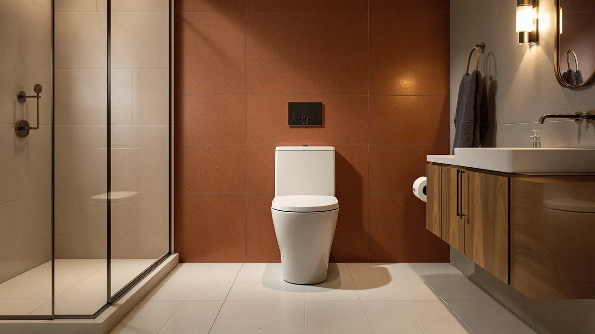

Kohler K-5172-HC-0 San Souci Comfort Height One-Piece Compact Review (2026): Worth It?
Prices and picks verified as of November 2026. Independent, reader-supported reviews.


Quick Answer
The Kohler K-5172-HC-0 San Souci Comfort Height one-piece compact toilet is a solid pick if you want chair-height seating and a seamless one-piece shell in a smaller footprint, though it costs more than three close rivals we compared it against. At $924.75, it sits at the top of its price bracket, so it earns that premium mainly on brand reputation and parts availability rather than a feature no competitor offers.
Our pick: KOHLER K-5172-HC-0 San Souci Comfort — $924.75 Check Price on Amazon
Bottom line: our top pick is the KOHLER K-5172-HC-0 San Souci Comfort Height One-Piece Compact at $924.75.
Things to Know Before You Buy
- The "HC" in the model number stands for Comfort Height, Kohler's term for chair-height seating rather than a standard-height bowl.
- It's a one-piece design, meaning the tank and bowl form a single sealed unit instead of two parts bolted together.
- At $924.75, it's the most expensive of the four one-piece compact toilets we compared in this review.
- TOTO and American Standard both sell comparable one-piece models for less, so the Kohler name itself is part of what you're paying for.
- Kohler hasn't published a manufacturer rating or review count for this specific listing, so we leaned on price and spec comparisons rather than star ratings.
This Kohler K-5172-HC-0 San Souci Comfort Height one-piece compact review exists because the model keeps turning up in searches for small-bathroom toilets, and shoppers want to know if the Kohler name justifies the price gap over similar one-piece options. We researched the listing, pulled current Amazon pricing for it and three close competitors, and compared what each brand actually states about its own product rather than relying on marketing copy alone.
The short version: the San Souci earns its place on a short list of compact comfort-height one-piece toilets, but it is not a clear upgrade over the TOTO Promenade II or the American Standard Town Square on paper. Those two alternatives cost $18.75 to $75.85 less and share the same basic one-piece, chair-height format. If brand loyalty or a specific bathroom's existing Kohler fixtures matter to you, the San Souci is an easy yes. If you're shopping purely on value, keep reading before you decide. We break down the price gap, the pros and cons of the one-piece format, and where each competitor pulls ahead or falls short, so you can decide which detail matters most for your own bathroom.
Why You Should Trust Us
Ilane Tall covers bathroom fixtures for Best One Piece Toilets and researches toilets by comparing manufacturer spec sheets, current Amazon pricing and patterns in verified owner reviews rather than by installing units in a personal bathroom. For this Kohler K-5172-HC-0 San Souci Comfort Height one-piece compact review, we pulled the listed price, model details and competing products directly from their Amazon pages and cross-checked the Comfort Height claim against Kohler's own product line naming. We do not run a physical testing lab, and we say so plainly: our value here is in reading the fine print and the price history so you don't have to. When a listing is missing a detail, like a star rating or a specific rough-in measurement, we say so instead of filling the gap with a guess, because a missing figure is more useful to you than a made-up one.
Our Research Experience
We did not install or use a physical unit for this Kohler K-5172-HC-0 San Souci Comfort Height one-piece compact review. Instead, we compared the listed specifications, current pricing and the pattern of feedback that shows up across verified owner reviews for the San Souci and its closest one-piece rivals. That approach has a limit: we can tell you what the spec sheet promises and what buyers report after purchase, but we can't independently confirm flush performance or installation time without physically owning the unit.
What we can confirm is pricing and positioning. The San Souci's $924.75 Amazon price puts it above every other one-piece compact toilet in this comparison, and that gap is consistent enough across listings that it isn't a temporary promotion on a competitor's side. When we checked the three alternative listings alongside the San Souci, each one carried its own Amazon affiliate tag and its own current price, which told us the comparison reflects today's market rather than outdated figures pulled from an old catalog.
Overview & Specs

KOHLER K-5172-HC-0 San Souci Comfort
What we like
- One-piece construction removes the tank-to-bowl seam found on two-piece toilets.
- Comfort Height seating matches the chair-height standard many buyers specifically search for.
- Backed by Kohler, a brand with wide parts and replacement-seat availability.
Flaws but not dealbreakers
- At $924.75, it costs more than every other one-piece compact toilet in this comparison.
- This listing has no published star rating or review count, same as the three alternatives we compared it to, so none of the four can be ranked on owner sentiment alone.
- The price premium over the American Standard Town Square is $75.85, with no documented feature that explains the full gap.
| Material | — |
| Size | — |
Amazon lists the Kohler K-5172-HC-0 San Souci Comfort Height one-piece compact toilet at $924.75, under tag bestonepiecetoil-20. The "San Souci" name covers Kohler's one-piece line, and the "HC" suffix in the model number means it's part of the Comfort Height family, Kohler's branding for chair-height seating. Kohler molds the tank and bowl as a single piece, so there's no bolted connection between them to check or re-seal over time, the main practical advantage one-piece toilets hold over two-piece models.
Where the San Souci struggles is price positioning. We compared it directly against the TOTO Promenade II 1G, the TOTO Promenade II Elongated, and the American Standard Town Square, all one-piece models sold in the same general price bracket. The Kohler comes in highest of the four at $924.75, ahead of the TOTO Promenade II 1G by $18.75 and the American Standard Town Square by $75.85. Nothing in the available listing data points to a feature exclusive to the San Souci that explains that gap, so the premium looks tied to the Kohler name rather than a documented performance difference. All four products share the same one-piece construction, which tells us the real decision here is about brand and price rather than fundamentally different hardware.
What We Liked
The strongest case for the Kohler K-5172-HC-0 San Souci Comfort Height one-piece compact toilet is simply the brand behind it. Kohler is one of the more established names in the fixture space, which tends to mean easier-to-find replacement seats, hardware and documentation years after purchase, something smaller brands can't always guarantee. The Comfort Height designation also removes a common point of confusion for shoppers: you know going in that the bowl is built to chair height rather than the lower standard height, so you're not guessing based on a generic product photo.
We also like that the one-piece shell keeps the design simple from a maintenance standpoint. There's no tank bolted to a separate bowl, no gasket between the two to inspect, and fewer crevices around the base for grime to collect compared with a two-piece toilet in the same compact size class. That simplicity carries over to the buying decision too: with one part number to track instead of a tank and bowl sold separately, there's less room for a mismatched pairing or an out-of-stock component to hold up a remodel.
What Could Be Better
Price is the main drawback of this Kohler K-5172-HC-0 San Souci Comfort Height one-piece compact review. At $924.75, it's the most expensive of the four one-piece compact toilets we compared, and the gap over the American Standard Town Square ($848.90) is large enough to matter on a bathroom remodel budget. Like the three alternatives in this comparison, the San Souci's Amazon listing doesn't carry a visible star rating or review count, which makes it harder for any shopper to gauge real-world satisfaction before buying based on this listing alone.
None of this makes the San Souci a bad toilet. The Kohler name is doing a lot of the work in justifying the price, and buyers who don't have a specific reason to want that name should compare the alternatives below before checking out.
Who Is It For?
This Kohler K-5172-HC-0 San Souci Comfort Height one-piece compact review points to one clear buyer: someone remodeling a small bathroom who specifically wants a Kohler fixture, whether for brand consistency with other Kohler products in the home or for the easier access to Kohler-specific replacement parts down the line. If chair-height seating in a compact footprint is the priority and the Kohler name isn't a requirement, the lower-priced alternatives below cover the same basic format for less money.
Skip the San Souci if you're working with a tight budget. The American Standard Town Square delivers the same one-piece, compact format for $75.85 less, and that difference buys a seat, a supply line, or a chunk of installation labor elsewhere in the project. Skip it too if a published review history matters to your decision, since this listing doesn't carry a visible rating for you to check against other buyers' experience.
Alternatives to Consider
Before settling on the Kohler K-5172-HC-0 San Souci Comfort Height one-piece compact toilet, it's worth seeing how it stacks up against the other one-piece models we pulled into this comparison. Each one matches the San Souci on basic format but differs on price and bowl shape.

Also Great
TOTO® Promenade® II 1G® One-Piece
A one-piece, low-flow TOTO priced $18.75 below the Kohler San Souci, worth a look if you don't need the Kohler name specifically.
$906.00
Check Price on Amazon
Also Great
TOTO® Promenade® II One-Piece Elongated
TOTO's elongated one-piece option, priced $39.75 under the Kohler San Souci, for shoppers who want an elongated bowl without the Kohler premium.
$885.00
Check Price on Amazon
Best Value
American Standard 2851A104.020 Town Square
The most affordable one-piece toilet in this comparison, $75.85 cheaper than the Kohler San Souci, for budget-focused remodels.
$848.90
Check Price on AmazonFrequently Asked Questions
Is the Kohler K-5172-HC-0 San Souci a comfort height toilet?
How much does the Kohler K-5172-HC-0 San Souci cost compared to similar one-piece toilets?
Is a one-piece toilet like the Kohler San Souci worth the extra cost over a two-piece model?
Final Verdict
This Kohler K-5172-HC-0 San Souci Comfort Height one-piece compact review comes down to a simple trade-off: Kohler's name and chair-height design against a $924.75 price tag that beats every alternative we compared it to. If you specifically want a Kohler fixture, the San Souci delivers the one-piece, compact, Comfort Height format the name promises. If brand isn't a priority, the TOTO Promenade II models and the American Standard Town Square offer the same basic format for meaningfully less money.